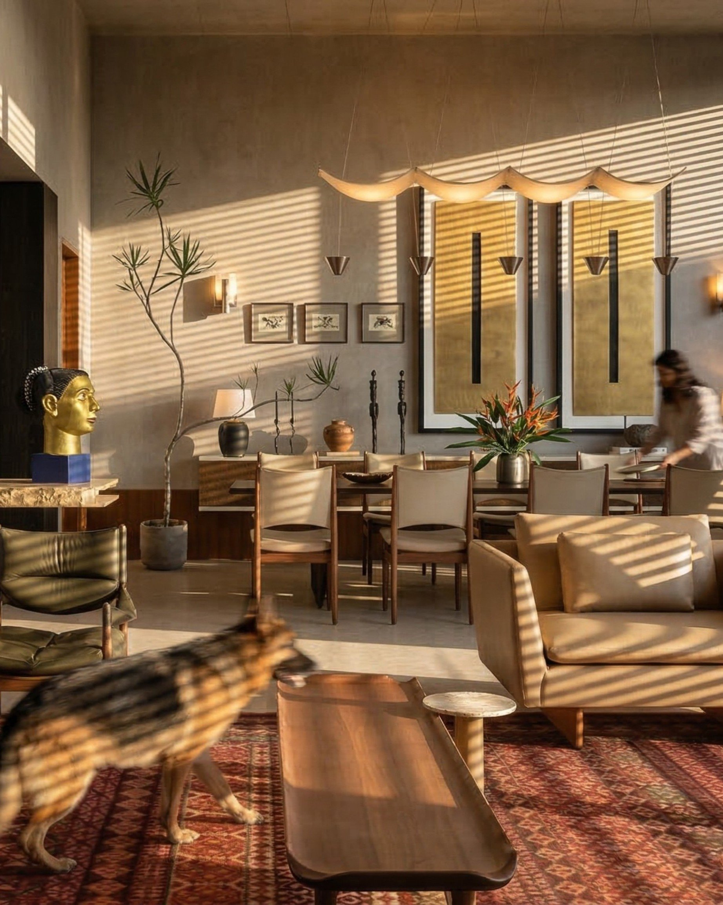
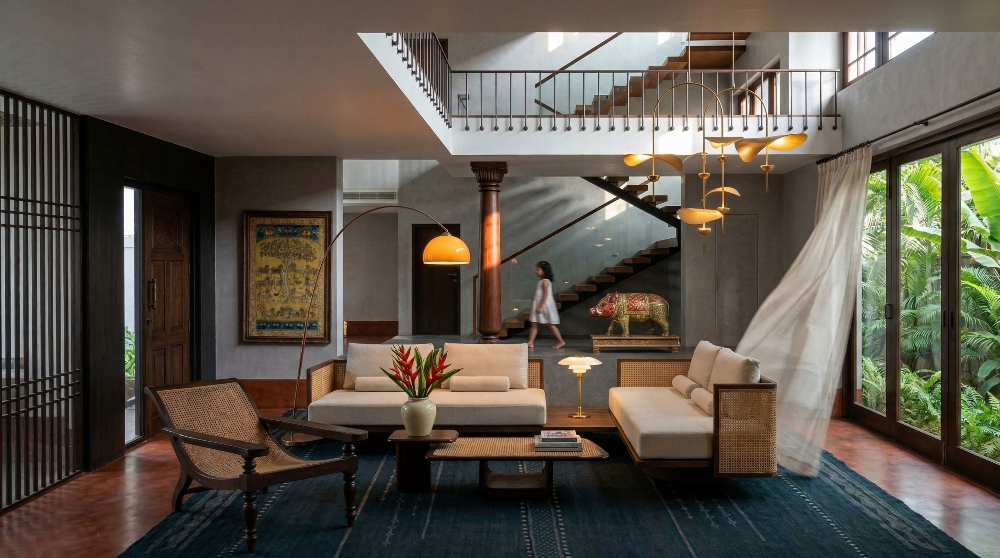

To the maker, the collector, the one whose eye we trust.
If you are reading this, your work has already been noticed.
Not in passing. With attention.
We look for work that stays longer than most things do today. Work that carries the weight of a real hand, a real decision, a real history. If that describes what you do, this letter is for you.
Within the objects you create, there is a profound stillness - a form that has arrived after generations of consideration. Whether it is the grain of the wood or the temper of the metal, your work is not just decoration; it is conviction made visible.

Click anywhere on the image for * Curatorial Insight
I am Ar. Kajal Diwakar. I am the Creative Director at [INSD]e* - Inquiries in Strategic Design, a multidisciplinary design consultancy practice based in Mangalore, founded together with Ar. Shruthadev Bantwal.
At [INSD]e*, we do not believe design begins with a drawing. It begins with an inquiry - into site, into context, into the people a space is being made for.
One of those inquiries is called INSD-eYE.
eYE is the aesthetic and curatorial intelligence of our practice. It is where we source art for the spaces we design, develop curated programming, and build relationships with the makers, collectors, and designers whose work carries the kind of authenticity that cannot be manufactured. The art brief, for us, is never an afterthought. It is part of the spatial conversation from day one.
We believe equally in the traditional and the contemporary, in craft that has been passed down through hands, and in work that is asking entirely new questions. What we look for, always, is intention. Work that is honest. Work that rewards a longer look.

This is why I am writing to you.
We are proposing a collaboration built on shared values. Remarkable work reaches further when carried by more than one voice. Your story and work would be hosted on our platform and introduced to our clients who trust us to curate the life within their spaces.
With genuine admiration,
Ar. Kajal Diwakar